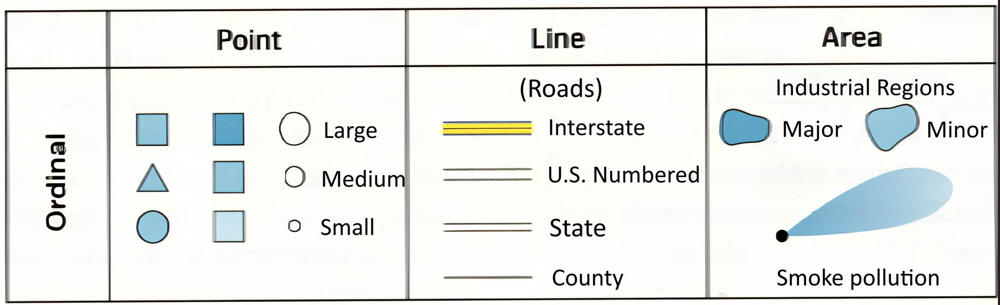
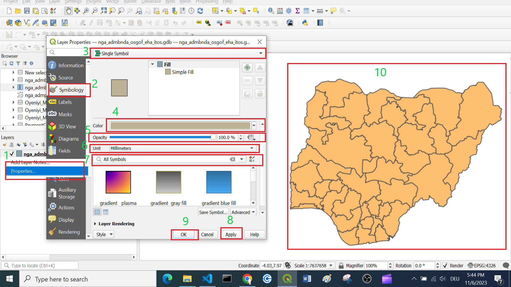
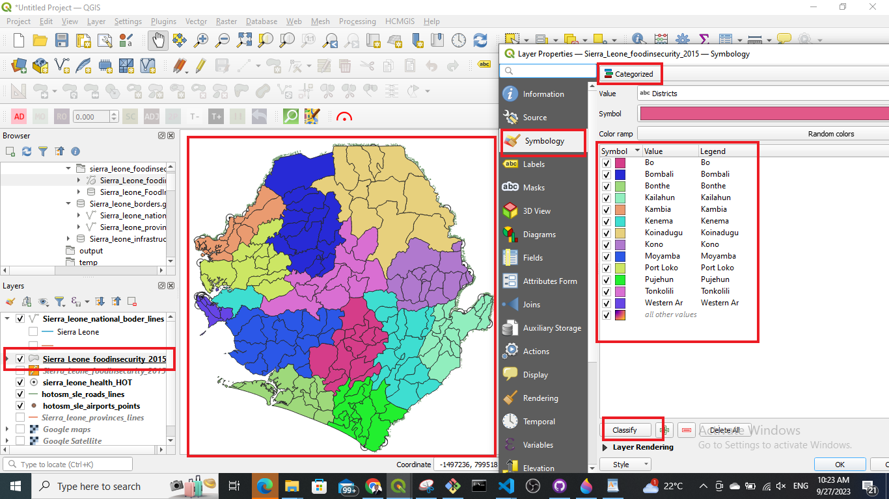
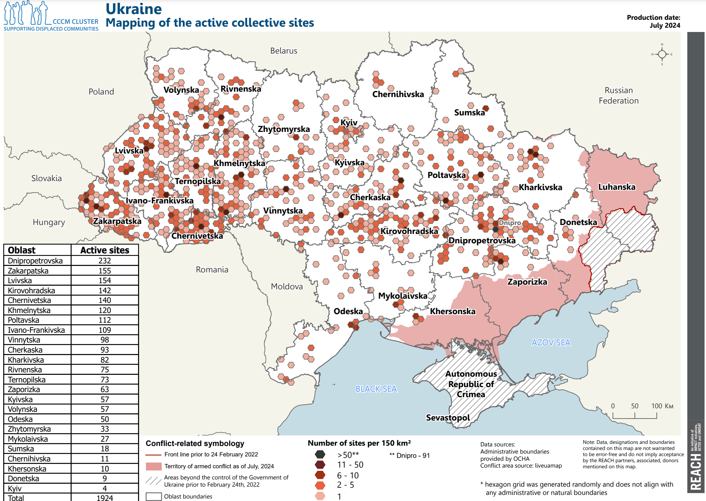
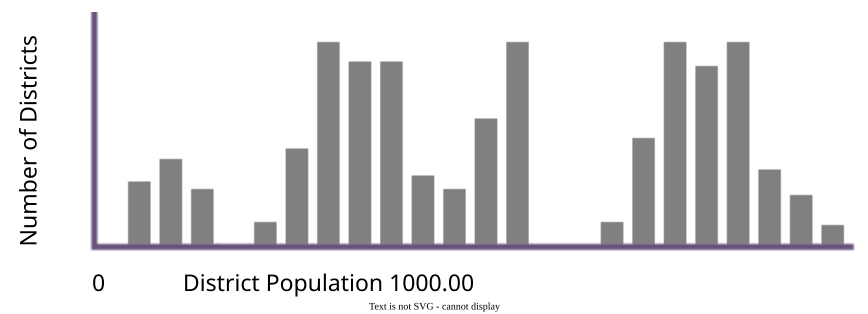
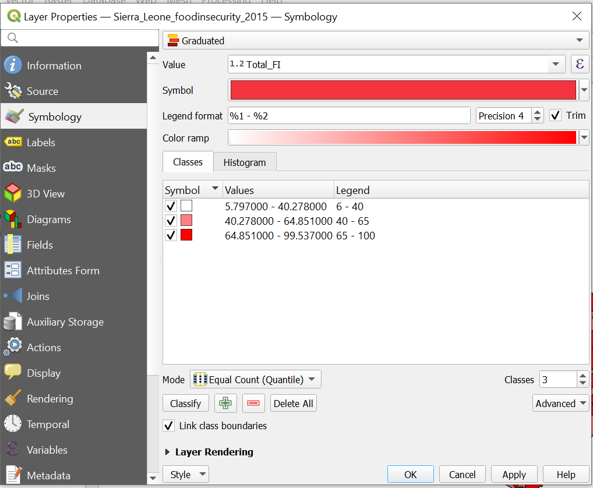

3.3. Clasificación de datos geoespaciales#
La clasificación de datos geoespaciales en los SIG consiste en categorizar la información geográfica en distintos grupos o clases en función de características o atributos compartidos. A cada clase se le puede asignar un símbolo o color distinto. Este proceso mejora la organización e interpretación de los datos espaciales.
Los atributos de los datos geoespaciales se almacenan en una columna específica dentro de la tabla de atributos. Esencialmente, elegimos una columna que contenga las características específicas de interés, lo que permite a QGIS agrupar los datos según estos atributos seleccionados (Fig. 3.8).

Fig. 3.8 Clasificación básica (fuente: HeiGIT).#
3.3.1. Escalas nominal, ordinal y métrica#
En la clasificación de datos geoespaciales, se utilizan las escalas nominal, ordinal y métrica para categorizar y medir las entidades espaciales según distintos niveles de precisión y jerarquía:
La escala nominal (datos categóricos) es la forma más sencilla de medición en la que las entidades se agrupan en categorías distintas basadas en atributos cualitativos. Estas categorías no tienen ningún orden ni clasificación inherentes. No tienen ningún significado numérico: los valores o etiquetas son solo nombres o identificadores (en algunos casos, las clases de cubierta terrestre pueden identificarse con números).
Ejemplos: Clases de cubiertas terrestres, tipos de vegetación, tipos de suelo, tipo de equipamiento (hospital, iglesia, escuela, etc.).

Fig. 3.9 Ejemplos de datos nominales y su representación (fuente: Dickmann [2018] Kartographie, Westermann).#
La escala ordinal (datos clasificados) implica categorizar los datos, pero, en este caso, las categorías tienen un orden o rango significativo. Sin embargo, los intervalos entre los rangos no son necesariamente iguales ni conocidos. El orden de clasificación es importante: las entidades pueden clasificarse u ordenarse de menor a mayor, pero la diferencia real entre las clasificaciones no se mide. Es posible comparar y clasificar los datos (es decir, qué entidad está clasificada en un nivel superior o inferior).
Ejemplos: Adecuación del terreno, red vial jerárquica, clases de tamaño de la población, clases de vulnerabilidad (p. ej., para unidades administrativas).

Fig. 3.10 Ejemplos de datos ordinales y su representación (fuente: Dickmann [2018] Kartographie, Westermann)#
La escala métrica (datos cuantitativos) se ocupa de datos que tienen tanto orden como diferencias exactas entre los valores. Estos datos se representan con valores numéricos precisos y las diferencias entre los valores son constantes en toda la escala. Los datos métricos pueden dividirse a su vez en:
Escala de intervalos. Datos numéricos en los que la diferencia entre valores es significativa, pero no existe un verdadero punto cero (p. ej., la temperatura en grados Celsius).
Escala de proporciones. Datos numéricos en los que tanto las diferencias como los coeficientes son significativos y existe un verdadero punto cero (p. ej., distancia, área).
Ejemplos: Datos de elevación, distancia, área y población.

Fig. 3.11 Ejemplos de datos métricos y su representación (fuente: Dickmann [2018] Kartographie, Westermann).#
{kind=link}
Según el tipo de escala, utilizará distintos métodos de clasificación. A continuación, repasaremos los distintos tipos de clasificación disponibles en QGIS y cuándo utilizarlos para cada dato. También repasaremos algunos escenarios con los que se puede encontrar en su trabajo con los SIG.
3.3.2. Clasificación por símbolo único#
Por defecto, QGIS genera una visualización de todas las capas en la configuración Single symbol. Esto significa que todas las entidades de una capa se visualizan igual. En esta configuración, puede cambiar muchos parámetros como el color o la opacidad, pero no puede clasificar los datos en varios grupos.
La clasificación por símbolo único es útil cuando se dispone de un conjunto de datos sencillo. Cuando se carga, por ejemplo, una capa de polígonos con los límites administrativos de una región y una capa de puntos con las principales ciudades. En este caso, puede elegir una clasificación por símbolo único y ajustar el símbolo para cada capa.
Cómo: Establecer la clasificación por símbolo único
Para ajustar el estilo de una capa…
Haga clic derecho en la capa.
Haga clic en
Symbology.Confirme que el ajuste de capa está en
Single Symbol.Seleccione el color que desee en el menú desplegable. Para ver más opciones de color, seleccione en el menú desplegable
Choose Color.Opcional: Puede ajustar la opacidad/transparencia de la capa. Esto puede ser muy útil cuando se desea mostrar varias capas superpuestas.
Opcional: Aquí puede establecer el tipo de unidad. Esto es útil si desea visualizar puntos en un tamaño determinado, por ejemplo.
Opcional: Aquí puede encontrar rápidamente estilos estándar y usados anteriormente.
Haga clic en
Applypara aplicar el ajuste.Haga clic en
OKpara cerrar la ventana.
{kind=link}

Fig. 3.12 Ajustar el estilo de una capa.#
3.3.3. Clasificación por categorías#
La clasificación por categorías en QGIS agrupa los datos espaciales en categorías distintas basadas en atributos específicos.
Esta clasificación organiza las entidades en categorías basadas en valores específicos de la tabla de atributos. Al asignar un símbolo a cada categoría, puede facilitar la interpretación de la información geoespacial en el mapa para obtener una visión más clara.

Fig. 3.13 Niger - Régions de Tillabéri et de Tahoua Éducation: infrastructures scolaires fermées ou endommagées pour cause d’insécurité entre 2019 et 2022 (fuente: REACH).#
En el mapa anterior, a las carreteras principales se les asignó un símbolo único. Las escuelas se clasificaron en dos categorías: escuela primaria (école primaire en francés) y escuela secundaria (école secondaire en francés).
La clasificación por categorías suele utilizarse para los datos de escala nominal y ordinal.
Escala de datos |
Definición |
Ejemplo |
Formato de datos típico |
|---|---|---|---|
Escala nominal |
Categorías sin orden ni clasificación inherentes |
Tipos de cubiertas terrestres, distritos, zonas de subsistencia |
Texto (“Desierto”) o número entero (5) |
Escala ordinal |
Categorías con un orden o clasificación significativos |
Rangos (p. ej., bajo, medio) |
Texto (“alto”) o número entero (5) |
{kind=link}

Fig. 3.14 Ejemplo de mapa con una clasificación por categorías.#
Cómo: Establecer la clasificación por categorías
Para clasificar los datos en categorías…
Haga clic derecho en la capa.
Haga clic en
Symbology.Haga clic en
Categorized.En el menú desplegable
Value, seleccione la columna en función de la cual desea clasificar los datos.Más abajo, haga clic en
Classify. Ahora debería ver todos los valores únicos o atributos de la columna seleccionada enValue. Para añadir o eliminar valores individuales, utilice los botones-y+.Opcional: En el menú desplegable
Symbol, puede seleccionar los colores y símbolos que desea utilizar.Opcional: En el menú desplegable
Color ramp, puede especificar la gama de colores que desea utilizar.Opcional: Puede abrir el panel
Layer Renderingen el botón de la ventana. Aquí puede ajustar la opacidad/transparencia de la capa.Haga clic en
Applypara aplicar el ajuste.Haga clic en
OKpara cerrar la ventana.
3.3.4. Clasificación graduada#
La clasificación graduada en los SIG consiste en categorizar los datos espaciales en clases o rangos basados en una progresión de valores. Este método es especialmente útil para visualizar datos cuantitativos, ya que permite diferenciar la intensidad, la densidad o la magnitud a lo largo de un espectro, lo que facilita una representación matizada de los fenómenos geográficos.
{kind=link}

Fig. 3.15 REACH, Ucrania, Mapa de seguimiento de los emplazamientos colectivos de desplazados internos, Actives, julio de 2024 (fuente: Reach).#
En Fig. 3.15, cada celda hexagonal contiene un valor de “número de emplazamientos por cada 150 km²” que oscila entre 1 y 91. Las celdas están organizadas en 5 categorías, lo que facilita la distinción entre los distintos valores de cada celda. Al reducir al mínimo la cantidad de clases, el lector puede leer y comprender el mapa más rápido.
La clasificación graduada se suele utilizar para datos cuantitativos medidos con una escala de intervalo o proporción.
Escala de datos |
Definición |
Ejemplo |
Formato de datos típico |
|---|---|---|---|
Escala de intervalos |
Intervalos equitativos entre valores, sin punto cero verdadero |
Temperatura (Celsius) |
Flotante (44,5 grados) |
Escala de proporciones |
Intervalos equitativos con un punto cero verdadero |
Población, longitud, número de árboles |
Entero (5 árboles) o flotante (12,5 km de carretera) |
Para clasificar los datos cuantitativos existen muchos métodos sobre cómo establecer las clases. No existe una única forma de seleccionar un método o de decidir cuántas clases utilizar. Todo depende de lo que quiera mostrar.
Tip
Un buen intervalo para el número de clases es de 3 a 7. No utilice más de 9 clases, ya que se hace difícil distinguirlas y ello dificulta la comprensión del mapa.
En el ejemplo que figura más abajo se ve un histograma de la población de distrito. Eso significa que tenemos un conjunto de datos con distritos y con la cantidad de personas que viven en cada uno de ellos. Solo basándonos en el histograma podemos hacer algunas afirmaciones generales.
No hay distritos con población nula o cero.
Solo hay unos pocos distritos con muy poca población.
Parece que hay tres grupos generales de distritos.
{kind=link}

Fig. 3.16 Histograma de datos de población. Fuente: Axis Maps.#
Sin embargo, si queremos mostrar en un mapa qué distritos tienen más población que otros, tenemos que clasificar los distritos.
Existen siete maneras en QGIS de dividir datos cuantitativos en clases. Las cuatro más importantes son: intervalos equitativo, cuantil, cortes naturales y manual. Veamos cómo quedarían las clases de la población de distrito si dividiéramos los datos en tres clases utilizando estos métodos.

Fig. 3.17 Diferentes clasificaciones. Fuente: HeiGIT (adaptado de Axis Maps)#
La clasificación por intervalos equitativos divide los datos en clases de tamaño uniforme, como 0-10, 10-20, 20-30, etc. Es eficaz para datos distribuidos uniformemente en toda la serie. Sin embargo, se recomienda tener precaución cuando los datos están sesgados o tienen valores atípicos significativos, ya que esto puede dar lugar a clases vacías. Los datos de población utilizados aquí, al carecer de grandes valores atípicos, son adecuados para la clasificación por intervalos equitativos.
La clasificación por cuantiles garantiza un número igual de observaciones en cada clase, lo que crea mapas visualmente atractivos. Sin embargo, puede dar lugar a clases con rangos numéricos significativamente diferentes y, en algunos casos, se separan tasas similares y se agrupan tasas diferentes. Es aconsejable utilizar un histograma para evaluar posibles problemas. En el ejemplo de la población de distrito, la clasificación por cuantil produjo un corte cuestionable, al combinar una parte del tercer grupo con la clase 2 a pesar de su mayor proximidad numérica a otras observaciones de la clase 3.
Los cortes naturales constituyen un método de clasificación óptimo cuyo objetivo es minimizar la diferencia dentro de una clase y maximizar las diferencias entre clases para un número determinado de clases. Sin embargo, produce una solución de clasificación única para cada conjunto de datos, lo que puede ser un inconveniente a la hora de hacer comparaciones entre mapas, como en una serie o atlas. En tales casos, sería preferible aplicar el mismo sistema de clasificación en todos los mapas.
La clasificación manual permite a los usuarios establecer uno o todos los cortes de clase según necesidades específicas. Este enfoque resulta útil cuando es necesario predeterminar ciertos puntos de corte, como la alineación con la media o el mantenimiento de la uniformidad en una serie de mapas. La clasificación manual se recomienda cuando otros métodos proporcionan una buena solución, pero pueden beneficiarse de ligeros ajustes para adaptarse mejor a necesidades o a métodos de visualización específicos.
La clasificación en escala logarítmica se emplea cuando los datos abarcan varios órdenes de magnitud y una escala lineal no representa eficazmente las variaciones. Esta escala aplica una transformación logarítmica a los datos, al comprimir los valores más grandes y expandir los más pequeños. Es útil para visualizar datos con crecimiento o decrecimiento exponencial. Sin embargo, la interpretación de los valores en una escala logarítmica puede requerir una comprensión profunda. Considere la posibilidad de utilizar una escala logarítmica cuando exista una serie amplia de valores y una escala lineal pueda ocultar patrones o tendencias importantes.
Cortes redondeados es un método de clasificación diseñado para crear mapas visualmente atractivos y fáciles de interpretar. Este enfoque busca generar cortes de clase que se alineen con números “redondos”, lo que hace el mapa más intuitivo para los lectores. Cortes redondeados es especialmente útil cuando se comunican datos espaciales complejos a un público amplio, ya que mejora la claridad y comprensibilidad del mapa. Tenga en cuenta que la elección de cortes “pretty” puede depender del contexto específico y de las preferencias del público destinatario.
La clasificación por desviación estándar es un método que determina los cortes de clase según la desviación estándar de los valores de los datos. Este enfoque organiza los datos en clases teniendo en cuenta la distribución de los valores en torno a la media. Cada clase representa un determinado número de desviaciones estándar de la media, lo que proporciona una base estadística para categorizar los datos. Esta clasificación es eficaz cuando se desea resaltar la variabilidad dentro del conjunto de datos. Sin embargo, es importante considerar la naturaleza de la distribución de los datos y si este método se ajusta a los objetivos analíticos del mapa.
Cómo: Establecer la clasificación graduada en QGIS
La configuración de una clasificación graduada en QGIS es similar a la configuración de una clasificación por categorías. Sin embargo, a diferencia de esta última, aquí tiene que decidir cuántas clases y qué método de graduación desea utilizar.
Clasificar los datos en clases…
Haga clic derecho en la capa.
Haga clic en
Symbology.Haga clic en
Graduated.En el menú desplegable
Valueseleccione la columna según la cual desea clasificar sus datos.Seleccione el número de clases que desea utilizar.
En
Modeseleccione el método de clasificación que desea utilizar, p. ej., recuento equitativo (cuantil).Haga clic en
Classify. Ahora debería ver todas las clases y la distribución de los valores. Para añadir o eliminar clases utilice los botones-y+.Opcional: Haga clic en
Histogram->Load Values. Ahora puede ver la distribución exacta de los valores entre las clases. Esto resulta muy práctico para elegir un método de clasificación. También puede comprobar el valor medio y la desviación estándar.

Opcional: En el menú desplegable
Symbolpuede seleccionar los colores y símbolos que desea utilizar.Opcional: En el menú desplegable
Color ramppuede especificar la gama de colores que desea utilizar. Para ver todas las rampas de color, haga clic en la flecha hacia abajo de laColor ramp->All Color Ramps.Opcional: En
Legend Formatpuede ajustar la precisión con la que se mostrará el rango de las clases en la leyenda. Normalmente, es práctico no utilizar números demasiado complicados.Opcional: Puede abrir el panel
Layer Renderingen el botón de la ventana. Aquí puede ajustar la opacidad/transparencia de la capa.Haga clic en
Applypara aplicar el ajuste.Haga clic en
OKpara cerrar la ventana.
{kind=link}

Fig. 3.19 Clasificación graduada en QGIS 3.36.#
3.3.5. Preguntas de autoevaluación#
Compruebe lo que aprendió
¿Qué es la clasificación de datos geoespaciales y por qué es útil en los SIG?
Respuesta
La clasificación de datos geoespaciales es el proceso de agrupar o categorizar las entidades de los datos geográficos por valores de atributos compartidos (o rangos) y, a continuación, asignar a cada clase su propio símbolo o color.
Esto ayuda a visualizar patrones, hacer que los mapas sean más fáciles de interpretar, distinguir diferencias en los datos y comunicar la variación espacial con mayor claridad (especialmente en el caso de atributos cuantitativos o categóricos).
¿Cuáles son los tres métodos de clasificación más comunes disponibles en QGIS? Explique sus diferencias.
Respuesta
QGIS admite estos tres modos de clasificación habituales:
Método |
Caso de uso y tipo de datos |
Funcionamiento y diferencias |
|---|---|---|
Símbolo único |
Para conjuntos de datos sencillos o cuando se desea que todas las entidades tengan el mismo aspecto. |
Todas las entidades reciben el mismo símbolo (color, tamaño). No hay diferenciación por atributos. |
Categorizado |
Para datos nominales u ordinales (categóricos). |
Las entidades se agrupan por valores de atributo únicos (categorías). Cada categoría tiene su propio símbolo. |
Graduado |
Para datos cuantitativos/métricos. |
Los valores numéricos se dividen en clases numéricas (rangos). Cada clase se simboliza de forma diferente (a menudo mediante una rampa). Puede elegir varias clases y métodos de clasificación (p. ej., intervalo equitativo, cuantil o cortes naturales). |
Nombre tres métodos diferentes para dividir los datos cuantitativos en clases. ¿Cuáles son sus diferencias?
Respuesta
Método |
Descripción/Forma de determinar cortes |
Fortalezas e inconvenientes |
|---|---|---|
Intervalo equitativo |
Divide la serie completa de datos en intervalos de igual tamaño (p. ej., dividiendo [min., máx.] en n intervalos de igual anchura) |
Sencillo e intuitivo, pero puede dar lugar a muchas clases vacías o poco pobladas si los datos están sesgados o tienen valores atípicos. |
Cuantil (recuento equitativo) |
Cada clase recibe (aproximadamente) el mismo número de entidades (es decir, recuentos iguales por clase) |
Buen equilibrio visual, pero los intervalos numéricos de las clases pueden variar mucho, y valores similares pueden dividirse entre clases. |
Cortes naturales (Jenks) |
Utiliza un algoritmo para minimizar la diferencia dentro de la clase y maximizar las diferencias entre clases (es decir, encuentra agrupaciones “naturales”) |
A menudo proporciona cortes visualmente significativos adaptados a la distribución de los datos. Pero los cortes dependen del conjunto de datos (menos comparables entre mapas). |
¿Cuáles son las ventajas y desventajas de elegir el número de clases de una clasificación graduada?
Respuesta
Más clases = más detalle, pero, si son demasiadas, el mapa resulta confuso (se hace difícil distinguir colores o diferencias sutiles). El módulo sugiere mantener las clases entre 3 y 7, y no más de 9.
Si las clases son demasiado pocas, se puede simplificar en exceso y ocultar variaciones o extremos importantes.
Si hay demasiadas clases, el mapa queda desordenado, los colores se parecen demasiado y resulta más difícil interpretarlo o compararlo.
La distribución de los datos es importante: los datos muy sesgados o los valores atípicos pueden distorsionar los rangos de clase, lo que hace que la mayoría de las entidades se agrupen en unas pocas clases y dejen otras casi vacías.
En el caso de los mapas comparativos (p. ej., series de mapas), el uso de cortes diferentes en cada mapa (porque los datos difieren) puede reducir la comparabilidad; los cortes fijos pueden ayudar a la uniformidad, pero es posible que no se adecuen por igual a la distribución de cada conjunto de datos.